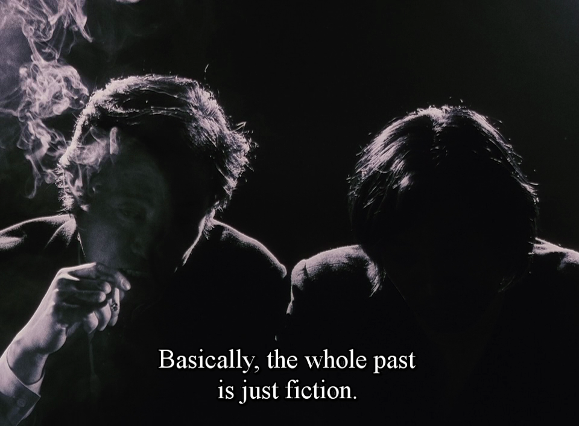

A pastoral lifestyle is lived according to seasons and the changing availability of water and pasture, depicted through art in an idealized manner, typically for urban audiences.
Even before the Alexandrian age, ancient Greeks had sentiments of an ideal pastoral life that they had already lost.
See, Cottagecore.
incoming(1): technocracy